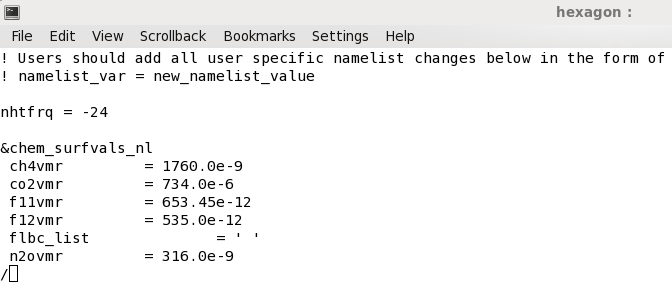

The goal is to triple CO2 (EXPNAME=CO2): we need to change the namelist (change CO2 value to 3x367 ppm = 1101 ppm).
Tripling CO2: how to update my namelist?
Namelists can be changed before configuring and building CESM but it can also be done before running your long simulation case. Then, you cannot use xmlchange and update the xml files, you need to directly change the namelist files.
To be able to triple CO2, you first need to check the current CO2 value. Go to your case directory:
On Abel:
# Make sure EXPNAME is correctly defined! (here CO2)
export EXPNAME=CO2
cd ~/cesm_case/f2000.T31T31.$EXPNAME
cd CaseDocs
ls
atm_in docn_ocn_in ice_modelio.nml rof_modelio.nml
atm_modelio.nml docn.streams.txt.prescribed lnd_in seq_maps.rc
chem_mech.doc drv_flds_in lnd_modelio.nml wav_modelio.nml
chem_mech.in drv_in ocn_modelio.nml
cpl_modelio.nml glc_modelio.nml README
docn_in ice_in rof_in
In CaseDocs, you can find all your namelists for your experiment. To check the current CO2 value, you can edit atm_in (do not modify it!) and search for co2vmr:
grep -i co2vmr atm_in
Change from co2vmr (year 2000) i.e. 367.0e-6 to 1101.0e-6 (3xCO2) in your user_nl_cam file (NOT in atm_in).
- Edit user_nl_cam and update its value.
- user_nl_cam is your case directory:
cd ~/cesm_case/f2000.T31T31.$EXPNAME
ls user_nl_cam

Then you can apply your changes and check again atm_in:
./preview_namelists
cd CaseDocs
# check and make sure your new value is set for cm2vmr
grep co2vmr atm_in
Before submitting your experiment, make sure you adjust the wall clock time!
Now you are ready to submit your simulation:
On Abel:
cd ~/cesm_case/f2000.T31T31.$EXPNAME
./f2000.T31T31.$EXPNAME.submit
Once your short simulation is done, check the outputs: were your changes taken into account? Do you get significant results?
If you are happy with your short run, you can setup your long run (14 months) experiment.